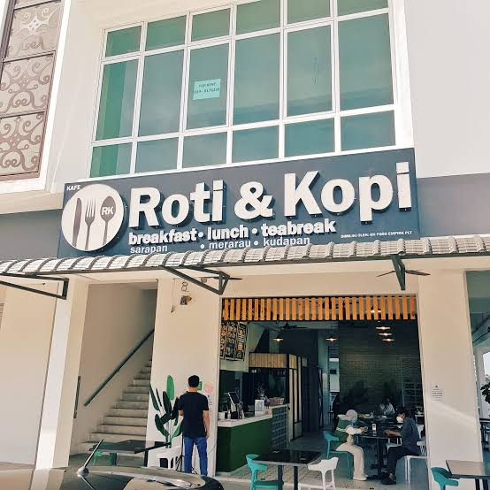

Welcome to Kopi & Roti Café, a cosy little café just around the corner from UMT where students come to study, eat and relax. Our slogan is Brewed with Love, Served with a Smile, and we always use the freshest ingredients to make every cup and every slice perfect.
“The best place near campus to study and eat! The roti bakar is always crispy and the staff are very friendly. Highly recommended for all UMT students.”
— Aina, UMT student

12, Jalan Universiti,
Taman Universiti,
21030 Kuala Terengganu,
Terengganu, Malaysia
Email us at kopiroti.cafe@gmail.com
Find us on Google Maps
© 2026 Kopi & Roti Café — All rights reserved.